מגזין קהילתי · גיליון ראשון תשפ״ז · ספטמבר ואוקטובר 2026
יש דברים שלא לומדים בכיתה
אבל בגאולים לומדים אותם כל יום
חדר לגו שילדים הקימו בעצמם. מטבח שבו לומדים הרבה יותר מבישול.
בחירות שתלמידים מנהלים, מסיק זיתים בפארק וחצר בית ספר שהופכת
למקום מפגש של שכונה שלמה.
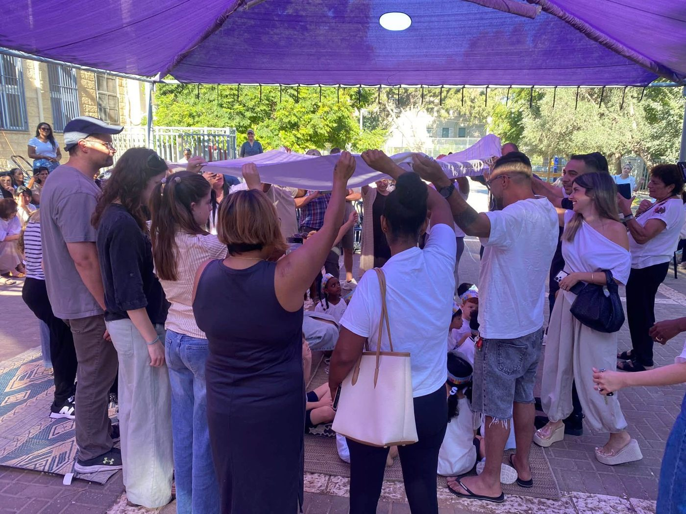
ביום הראשון ללימודים, הורים מחזיקים חופה של טליתות מעל תלמידות ותלמידי כיתות א׳
בחודשיים האחרונים קרו בגאולים לא מעט דברים. חלקם גדולים, חלקם
קטנים, אבל כמעט בכולם יש משהו משותף: ילדים שלא רק משתתפים אלא גם
יוצרים, צוות שמאמין בלמידה אחרת, והורים שבוחרים להיות חלק ממה
שקורה.
אז מה באמת קורה אצלנו בגאולים?
01
ילדים עושים פה דברים
מי צריך מבוגרים כשיש כיתה ה׳?
אלפי חלקי לגו, חדר אחד וקבוצת ילדים שהחליטה להפוך רעיון למציאות.
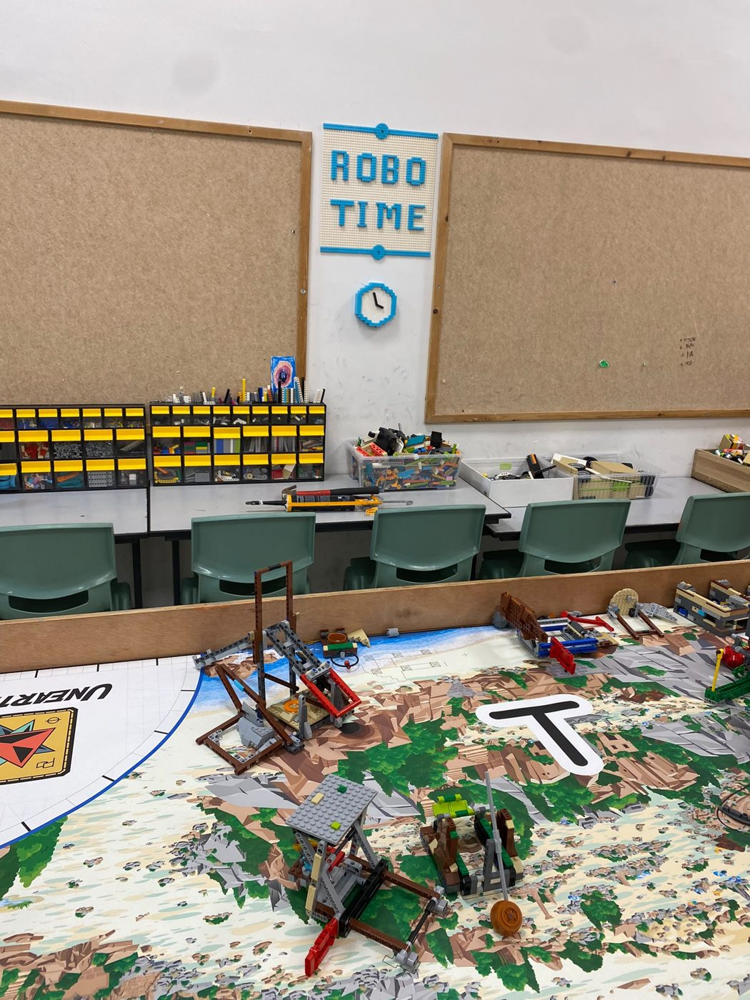
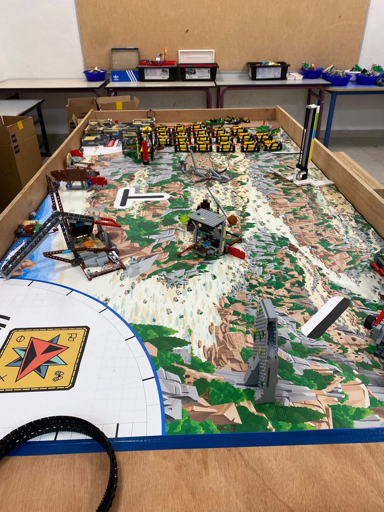
תלמידי ה׳1 תכננו, סידרו והקימו בעצמם חדר לגו חדש בבית הספר. הם
חשבו על המרחב, ארגנו את החלקים והכינו מקום שבו ילדים יכולים
לבנות, ליצור, לשחק ולהתמודד עם אתגרים.
אבל לחדר הזה יש גם תפקיד נוסף. הוא נועד להיות מקום שאפשר להגיע
אליו כשצריך קצת שקט, זמן לעצמך או הפסקה מההמולה.
לפעמים הדרך הטובה ביותר ללמד ילדים אחריות היא פשוט לתת להם
אחריות.
הדמוקרטיה לא נשארת בספר
איך נראות בחירות כשנותנים לילדים לנהל אותן?
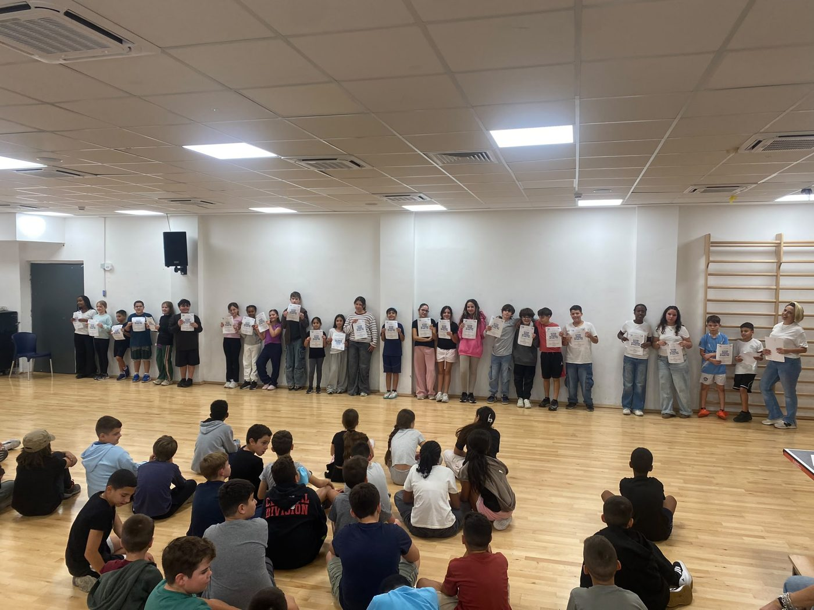
הנבחרים והנבחרות מקבלים את התעודות מול כל בית הספר
בגאולים התשובה פשוטה: ועדת קלפי של תלמידי ו׳1, הצבעה מסודרת,
ספירת קולות והכרזה על התוצאות.
תלמידי כיתות ד׳ עד ו׳ בחרו את נציגיהם להנהגת התלמידים, כשהתהליך
כולו מתנהל בהובלת ילדים. הנציגים שנבחרו נפגשים מדי שבוע עם אביב,
מובילת ההנהגה, ומתחילים ללמוד מה המשמעות של לייצג אחרים.
כי דמוקרטיה היא לא רק הזכות להצביע. היא גם היכולת להקשיב, לקבל
החלטות ולשאת באחריות.
בקבוקים קטנים. רעיון גדול.
מה הקשר בין בקבוק ריק, קיימות ועזרה למשפחות בקהילה?
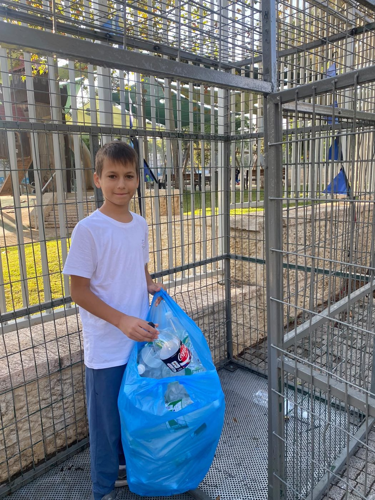
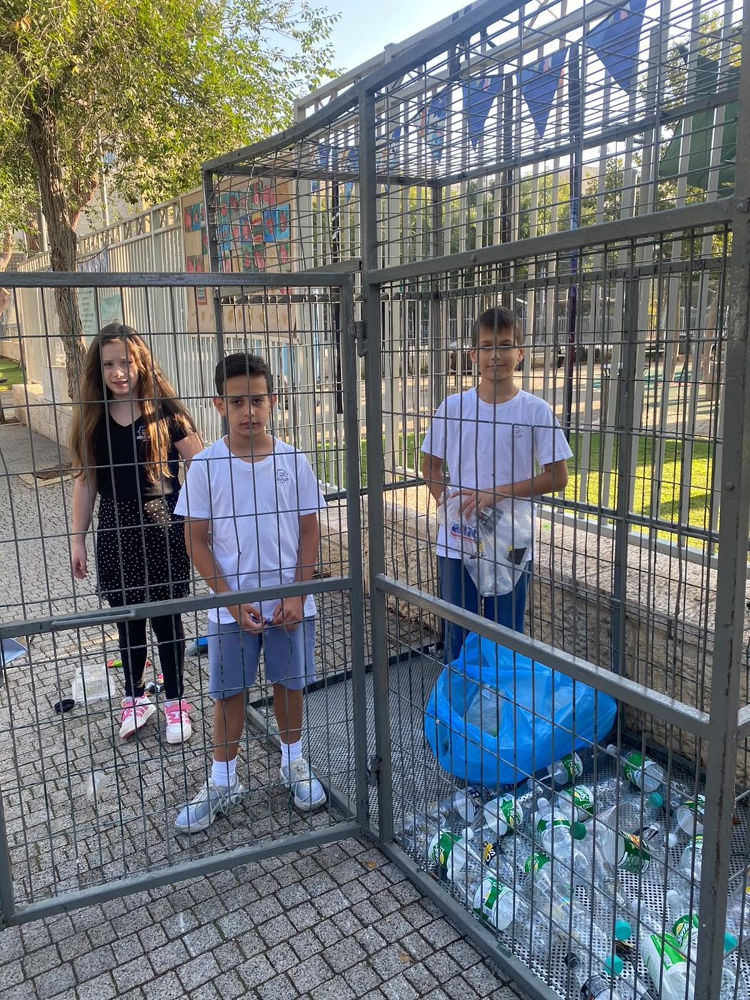
השנה התחילו תלמידי גאולים לאסוף בקבוקים למיחזור. מתקן איסוף הוצב
בסמוך לבית הספר, והילדים מביאים בקבוקים, ממיינים ואוספים. הכסף
שיתקבל מהחזרת הבקבוקים יועבר למשפחות שזקוקות לסיוע.
יש כאן שיעור שלם שלא צריך בשבילו לוח ומחברת. על צריכה, סביבה,
נתינה ועל כך שגם פעולה קטנה יכולה לעשות משהו טוב למישהו אחר.
תודה לסימה כהן, אמא של מיכאל מכיתה ד׳, שדאגה למתקן האיסוף.
02
מי אמר שלומדים רק בכיתה?
קמח, מים וקצת עצמאות
יש שיעורים שמסתיימים במחברת. אחרים מסתיימים בחלה.
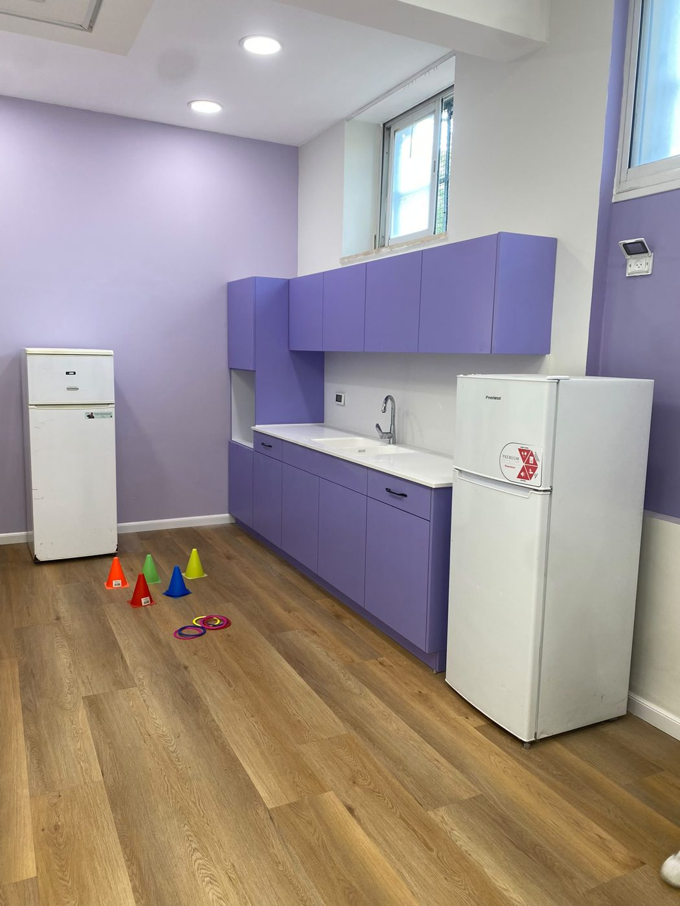
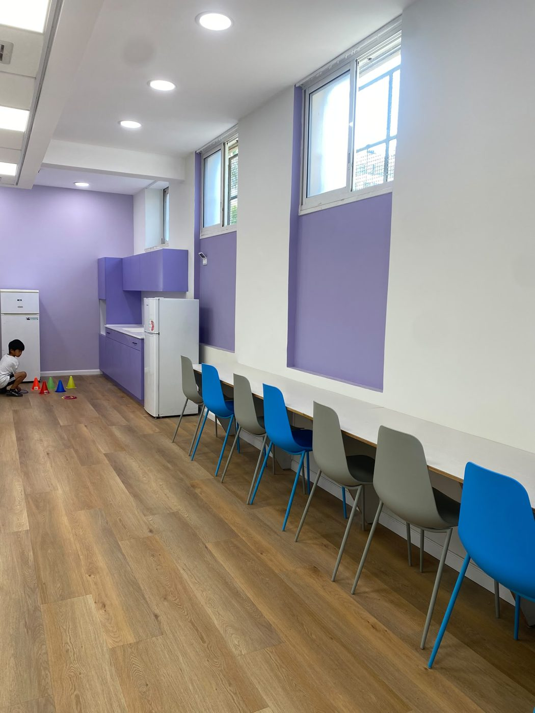
המטבח החדש של גאולים נפתח באוקטובר, וכבר ביום הראשון אפו הילדים
הצעירים עוגה והבוגרים הכינו חלות. אבל הסיפור הוא לא מה יצא
מהתנור.
במטבח צריך לתכנן, לקרוא הוראות, למדוד, לחלק משימות, לשתף פעולה,
להתמודד עם טעויות ולסדר אחריך. אלה מיומנויות שנמצאות כמעט בכל
תחום בחיים.
לכן המטבח החדש לא מיועד רק לימי שיא או לחגיגות. שיעורי אפייה
ובישול יהיו חלק משגרת בית הספר. ולפעמים, בסוף השיעור, אפשר גם
לאכול את מה שלמדנו.
יש לכם כלי מטבח חלביים או פרווה שאינם בשימוש? נשמח לקבל אותם
במזכירות בית הספר.
כיתה בלי קירות
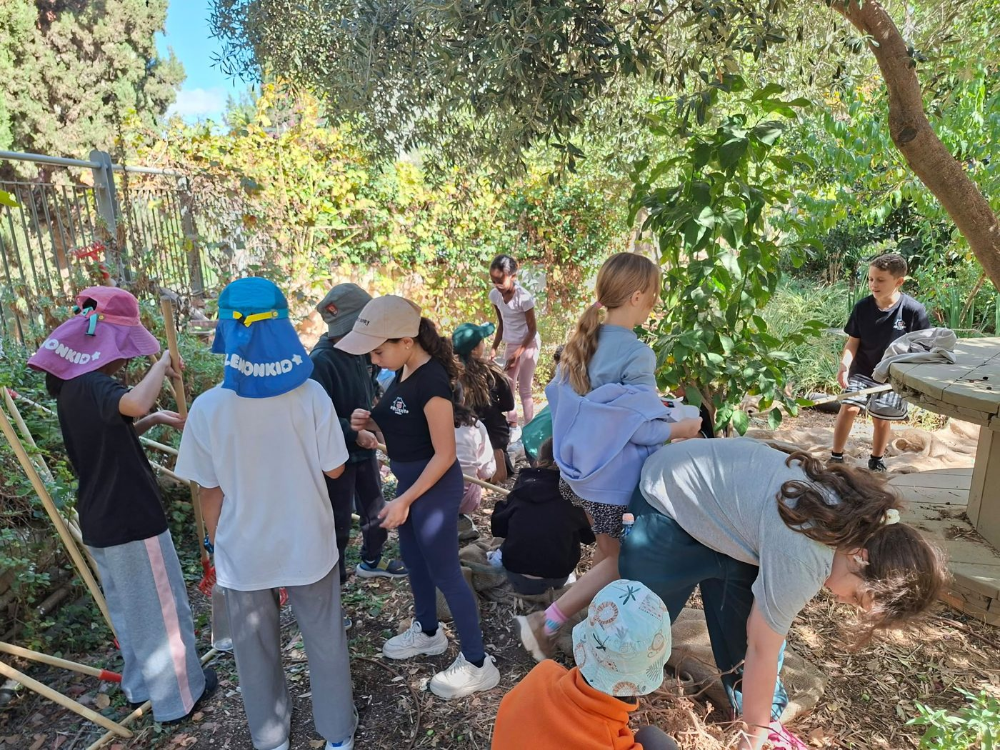
כיתות ג׳ וד׳ במסיק זיתים בפארק ליפשיץ, סמוך לבית הספר
בחודש אוקטובר יצאו תלמידי כיתות ג׳ וד׳ לפארק ליפשיץ הסמוך לבית
הספר למסיק זיתים. העצים, הזיתים, עונת השנה והמרחב הפתוח הפכו
כולם לחלק מהלמידה.
השנה שתי מחנכות מבית הספר משתתפות בהשתלמות בלמידת חוץ, כחלק
מהרחבת האפשרויות ללמוד גם מחוץ לכיתה.
כי לפעמים צריך לצאת מבית הספר כדי לגלות כמה דברים אפשר ללמוד
ממש לידו.
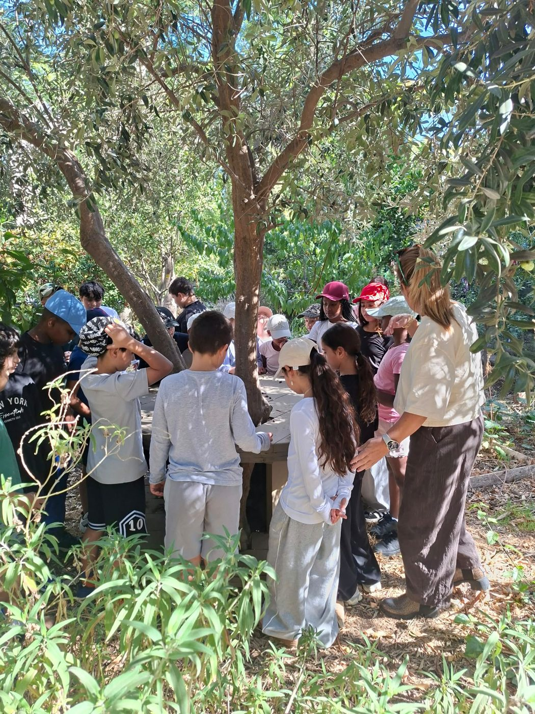
ואפשר ללמוד גם לגמרי אחרת
לא כל ילד מתעניין באותם דברים, ולא כולם מגלים את החוזקות שלהם
באותו מקום.
בגאולים אפשר לפגוש ילדים שחוקרים ומתנסים ברובוטיקה ובהייטק,
ילדים שמוצאים את הקול שלהם במקהלה או בלהקת בית הספר, ואחרים
שמתחברים לספורט, לשפות, לחשיבה וליצירה.
לחשוב, לחקור וליצוררובוטיקה · הייטק · יוניקורן · אתגרי חשיבה · מרחב ליזמות
למצוא קול ולהובילמרכז מנהיגות · מקהלה · להקת בית הספר · שיעורי לדינו
ללמוד דרך תנועה ועשייהנבחרות ספורט · רכיבה אתגרית · גינון טיפולי
לפתוח עוד דלתות ללמידהתגבור אנגלית
המגוון הזה חשוב, כי לפעמים ילד צריך לפגוש תחום אחד חדש כדי לגלות
משהו חדש על עצמו.
03
בית ספר עם דלת פתוחה
ככה מקבלים משפחה חדשה
ביום הראשון ללימודים עמדו הורים והחזיקו חופה של טליתות מעל
תלמידות ותלמידי כיתות א׳. הילדים צעדו פנימה, ובטקס פתיחת השנה
שרה איתנו מקהלת בני הגיל השלישי של המינהל הקהילתי.
זה היה רגע קטן ויפה שמספר משהו גדול על גאולים. ביום הראשון שלהם
בבית הספר, הילדים לא פגשו רק כיתה חדשה ומחנכת. הם פגשו מעגל שלם
של אנשים שבאו בשבילם, ובהם גם שכנים מהשכונה שאין להם ילדים בבית
הספר.
ברוכים הבאים למשפחות החדשות של גאולים.
בית ספר של שכונה שלמה
מה צריך כדי ליצור אחר צהריים טוב בחצר בית ספר?
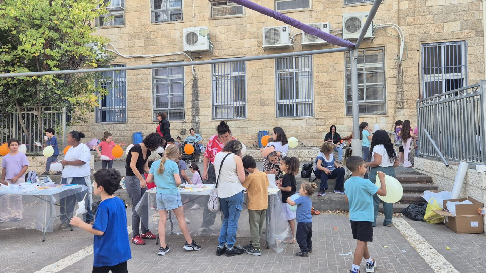
החצר התמלאה במשפחות מבקעה, מארנונה ומהסביבה
כמה שולחנות יצירה, קרמבו, ילדים, משפחות, מופע חורף והרבה הורים
שמוכנים לקחת חלק.
ב־22 באוקטובר נפרדנו מהקיץ במסיבת שעון החורף של קהילת גאולים.
היו יצירות, הפתעות ומופע חורף של השחקנית והיוצרת שני ויסמן. אבל
הדבר היפה ביותר היה דווקא האנשים שהגיעו: לא רק משפחות מבית הספר,
אלא גם משפחות מבקעה, מארנונה ומהסביבה.
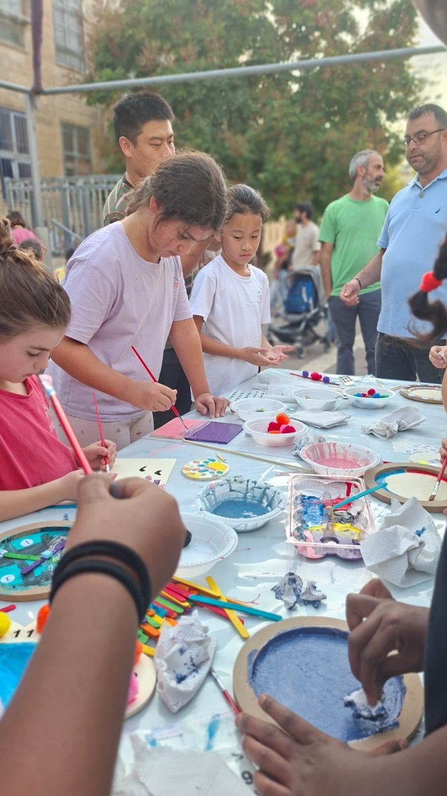
כי בית ספר שכונתי יכול להיות הרבה יותר מהמקום שאליו שולחים את
הילדים בבוקר. הוא יכול להיות מקום שבו שכנים נפגשים, משפחות
מכירות זו את זו וקהילה מתחילה להיווצר.
ההורים לא רק באים לאסיפות
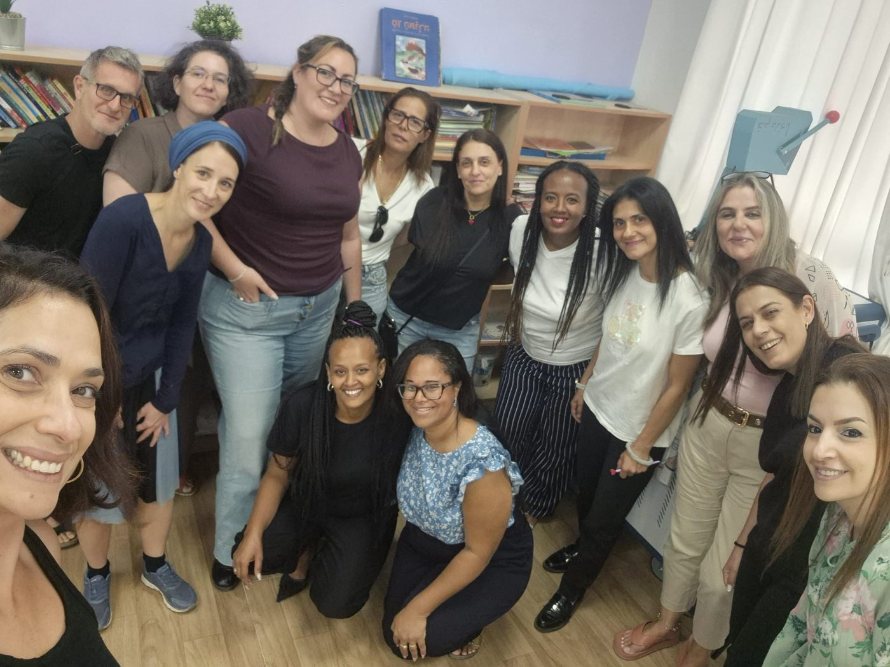
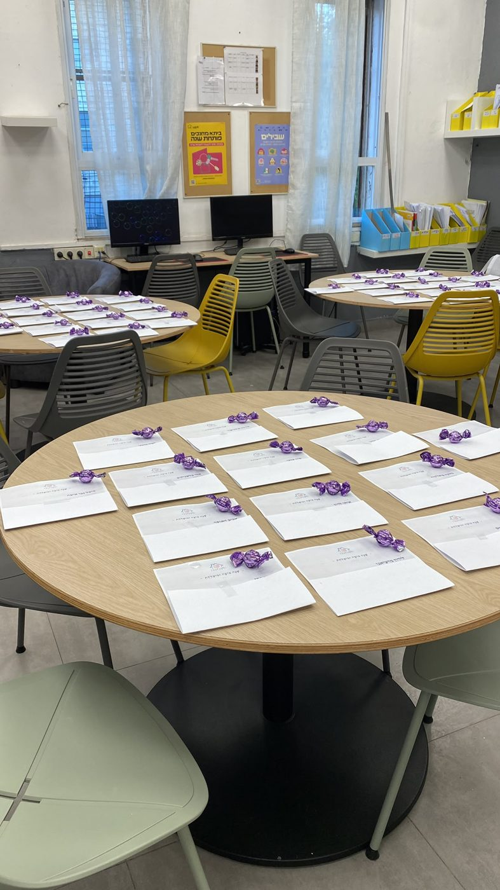
בתחילת השנה ביקשנו מהורי גאולים לספר לנו במה הם טובים, מה הם
יודעים לעשות ובאילו תחומים יוכלו לתרום. לא כי חסרים אנשי מקצוע
בבית הספר, אלא כי יש כל כך הרבה ידע, ניסיון ויכולות שכבר נמצאים
בתוך הקהילה שלנו. באסיפת ההורים הראשונה, ב־8 בספטמבר, התחלנו
למפות את הכוחות האלה.
גם הנהגת ההורים התרחבה השנה, עם הורים נוספים מכל השכבות ומהחינוך
המיוחד. אביה כהן קושר נבחרה לשנה שנייה לתפקיד יו״ר הנהגת ההורים.
במקביל אנחנו מקדמים תפיסה של קבוצות עשייה, כדי שמעורבות הורית לא
תישען על מספר קטן של הורים אלא תאפשר לכל מי שמעוניין לקחת חלק,
גם במשהו קטן.
ובתחילת השנה חיכתה לצוות החינוכי הפתעה: מכתבי תודה אישיים שהכינה
קהילת ההורים והונחו בחדר המורים. כי שותפות מתחילה גם בלדעת להגיד
תודה.
04
דברים שחשוב לדבר עליהם
מה מרשמלו יכול ללמד על השנה החדשה?
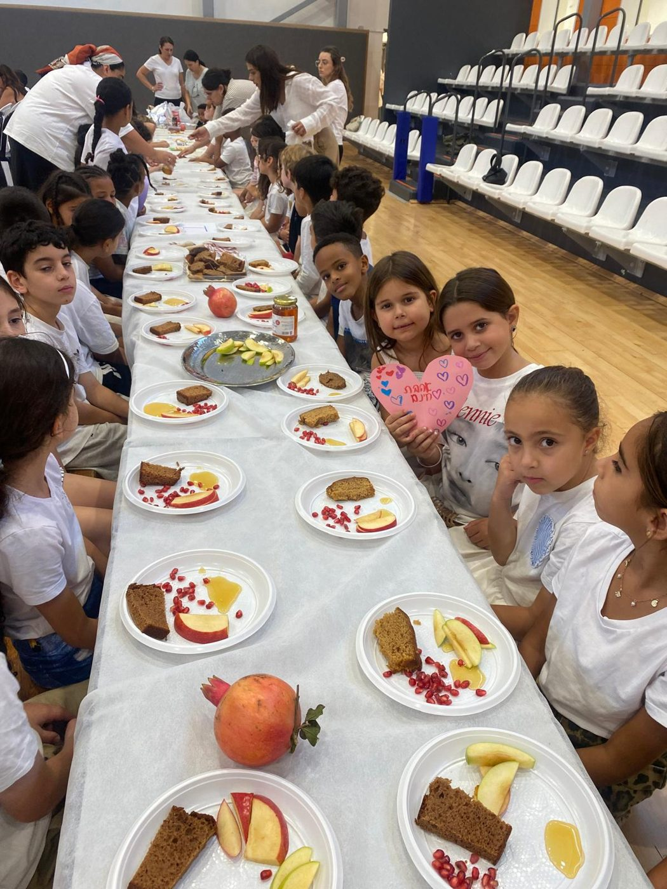
כל תלמידי גאולים סביב שולחן אחד ארוך, בסדר ראש השנה הבית ספרי
בסדר ראש השנה הבית ספרי ישבו כל תלמידי גאולים סביב שולחן אחד
ארוך, לבושים בלבן. אבל השנה סימני החג לא היו רק תפוח בדבש ורימון.
הילדים התבקשו להביא חפצים מהעולם שלהם ולהפוך אותם לברכה לשנה
החדשה.
וכך נולדו כמה רעיונות שלא בטוח שהיינו חושבים עליהם בעצמנו:
מרשמלו · שתהיה לנו שנה גמישה ומתוקה
מגנט · שנמשוך אלינו דברים טובים
צלחת · שנזכה להצלחות
חבל · שנדע לקשור קשרי חברות טובים
מראה · שנדע להתבונן בעצמנו ולזהות את החוזקות שלנו
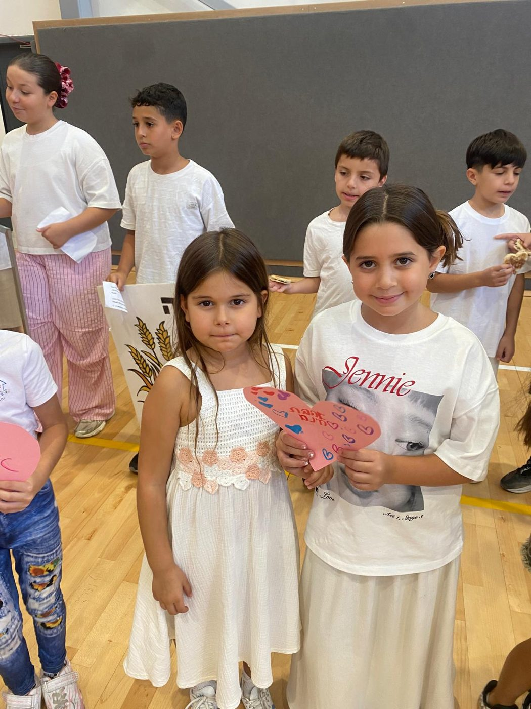
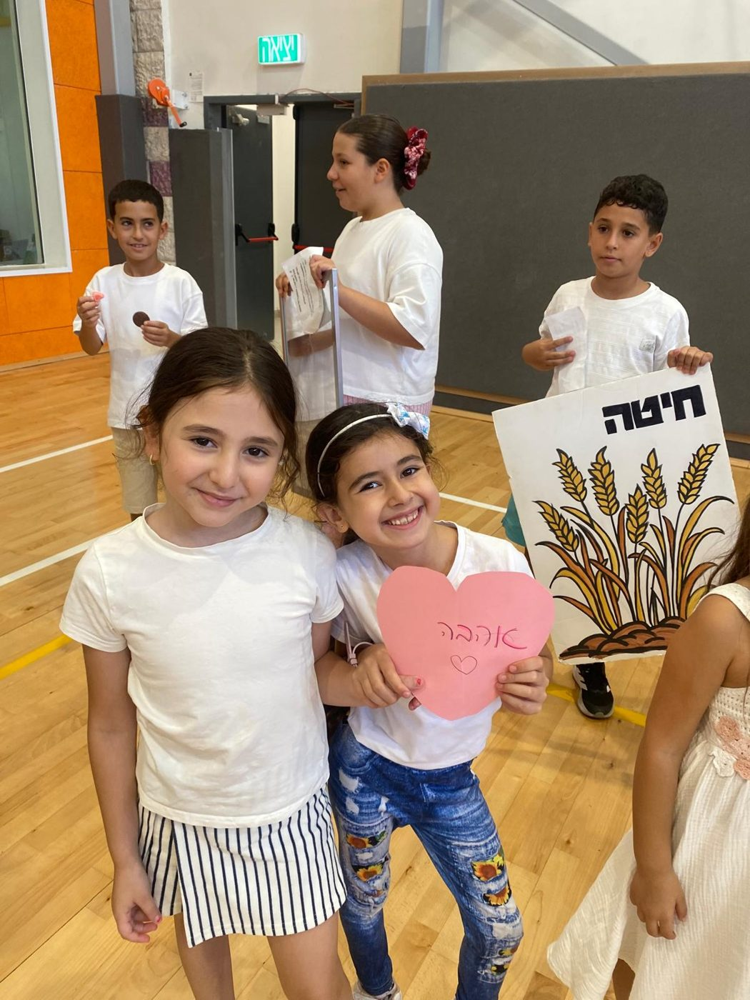
זו הייתה דרך מקורית לדבר על משאלות, ערכים והתחלות חדשות, ובעיקר
לתת לילדים להביא את המחשבות שלהם אל שולחן החג.
זיכרון שמצמיח
איך מדברים עם ילדים בגילים שונים על אירועים קשים, על אובדן ועל
זיכרון?
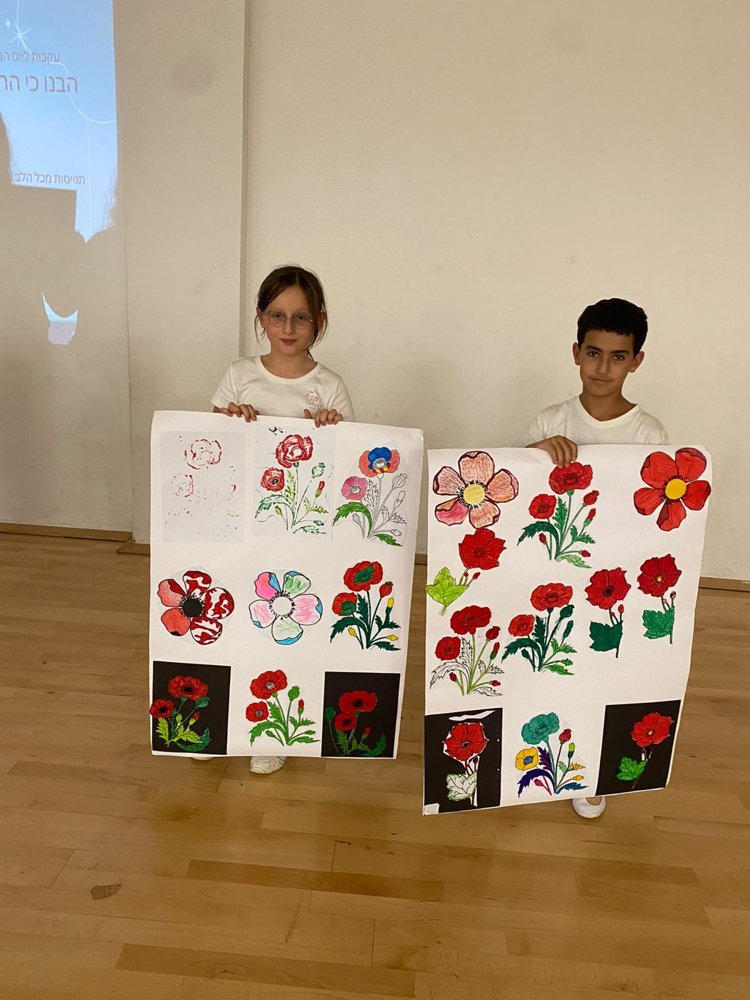
הכלנית כסמל לצמיחה ולהתחדשות, בעבודת שכבה ה׳
ב־5 באוקטובר הקדיש בית הספר יום לשיח ולפעילות מותאמת גיל, בהובלת
המחנכות שמכירות את הילדים מקרוב. כל שכבה עסקה בנושא אחר:
כיתות א׳ וב׳ · ערבות הדדית, היכולת לעזור לאחרים והאפשרות לבקש עזרה
כיתות ג׳ · תיבת חיבוקים שכבתית עם מילים מצמיחות
כיתות ד׳ · הוקרה ותודה לכוחות הביטחון
כיתות ה׳ · הכלנית כסמל לצמיחה ולהתחדשות
כיתות ו׳ · החוזקות של החברה הישראלית
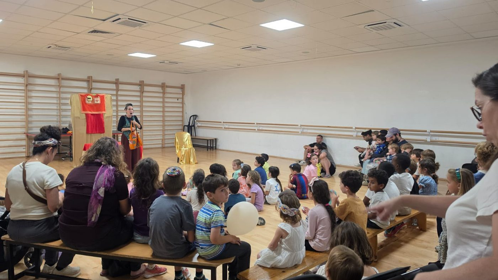
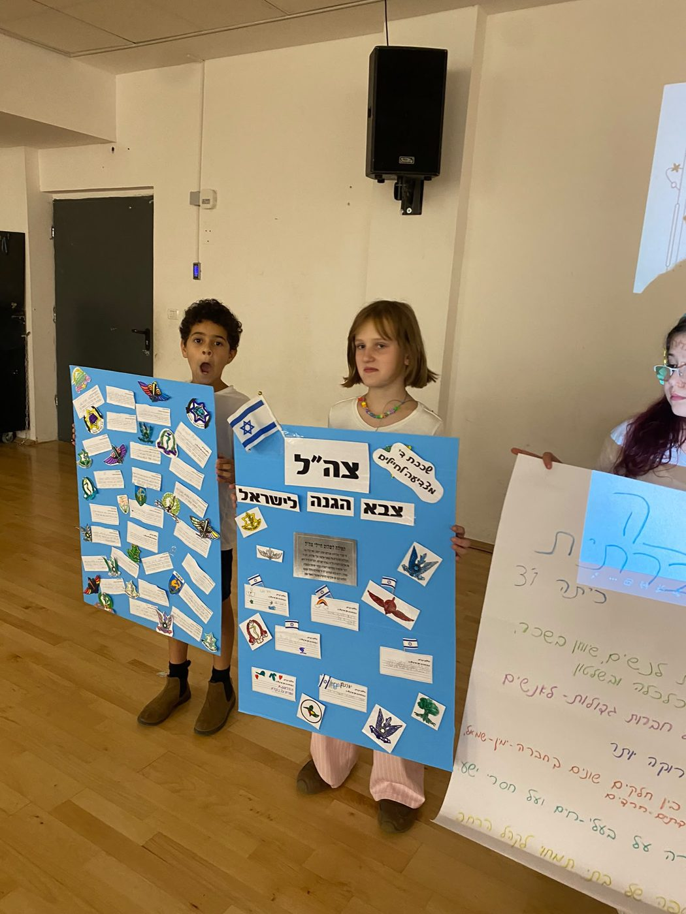
תלמידי כיתות ג׳ עד ו׳ נפגשו בסיום היום למפגש משותף, לשירה
ולתפילה לשלום המדינה.
הבחירה הייתה לאפשר לילדים לפגוש את הנושא בדרכים שונות, מתוך
רגישות לגילם ולצרכים שלהם.
לא כל מי שנמצא בכיתה מרגיש שרואים אותו
בגאולים השבוע נפתח במפגש בית ספרי ובצפייה משותפת בסרטון, שממנו
יוצאים לשיחה. בחודש חשוון עסקנו בין היתר בשני נושאים שנוגעים
לחיים של ילדים וגם של מבוגרים.
אנשים שקופים: האם אנחנו שמים לב למי שנמצא לידנו?
למי שלא תמיד מדברים איתו, למי שלא תמיד רואים?
לחץ חברתי: מה קורה כשכולם עושים משהו שאנחנו לא
שלמים איתו? איך בוחרים אחרת?
אלו לא שאלות שיש להן תשובה אחת נכונה. אבל חשוב שיהיה להן מקום
בשיחה. חינוך חברתי לא מתרחש רק כשיש בעיה שצריך לפתור. הוא מתרחש
גם כשמפנים זמן לדבר על החיים עצמם.
מסורת שפוגשת מקום
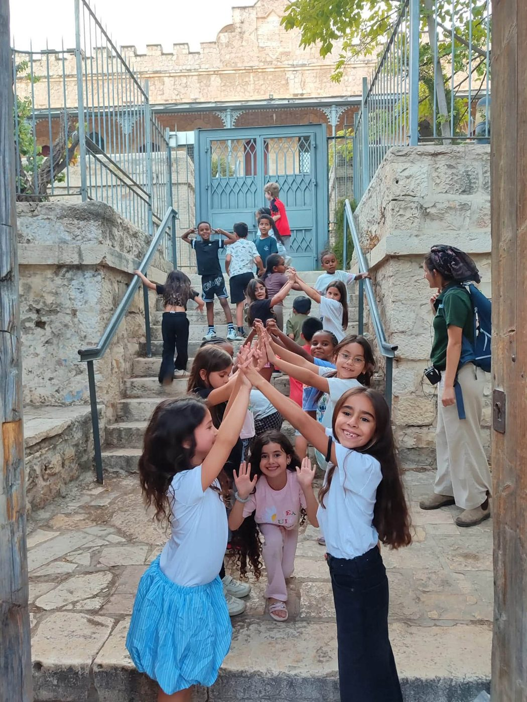
שער ידיים במדרגות ירושלמיות, בסיור הסליחות של שכבות א׳ וב׳
לקראת הימים הנוראים יצאו תלמידי שכבות א׳ וב׳, יחד עם הצוות
החינוכי וההורים, לסיור סליחות בירושלים. הם פגשו את העיר בתקופה
מיוחדת בשנה, דרך הליכה משותפת, היכרות עם המרחב ועם מסורות החג.
ולקראת ראש חודש חשוון התקיימו בכיתות ארוחות משותפות, ובחלקן
הילדים גם הכינו את האוכל בעצמם, כולל אפיית לחמים. דרך נוספת לחבר
בין מסורת, למידה וחיים משותפים.
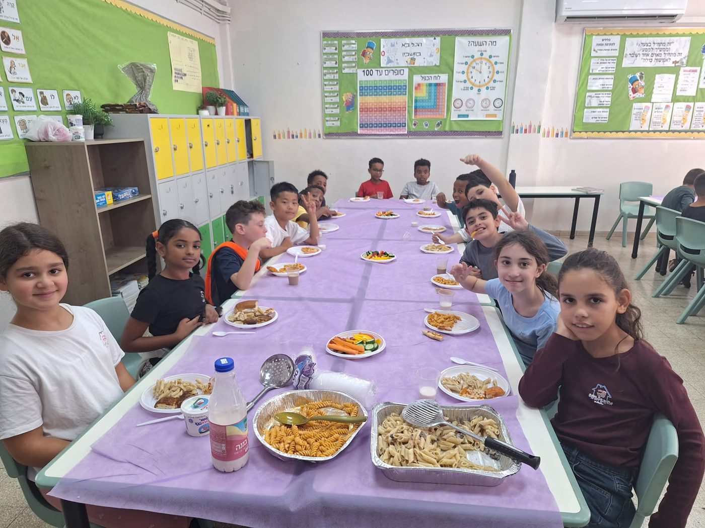
05
ומה הלאה?
הדברים הטובים באמת נבנים לאורך זמן
החודשיים הראשונים היו מלאים בהתחלות, אבל המעניין הוא מה קורה
אחריהן.
חדר הלגו הופך לחלק מחיי בית הספר. המטבח נכנס לשגרת הלמידה. הנהגת
התלמידים נפגשת מדי שבוע. למידת החוץ ממשיכה להתפתח, קבוצות ההורים
מתחילות לפעול, והתוכניות השונות מאפשרות לעוד ילדים למצוא מקום
לביטוי.
לא כל דבר צריך להיות אירוע גדול. לפעמים השינוי נמצא דווקא בדברים
שמתרחשים בכל יום.
וזה מה שאנחנו רוצים להמשיך לבנות בגאולים: בית ספר שיש בו מקום
ליוזמה, לאחריות, לסקרנות, למפגש ולדרכים שונות ללמוד ולצמוח.
מחפשים בית ספר לשנה הבאה?
אם אתם גרים בבקעה, בארנונה או בסביבה, נשמח שתכירו את גאולים.
בואו לראות את המרחבים, להכיר את הצוות, לשמוע על התוכניות ולגלות
איך נראים החיים בבית הספר שלנו. השאירו פרטים ונחזור אליכם לתיאום
היכרות.